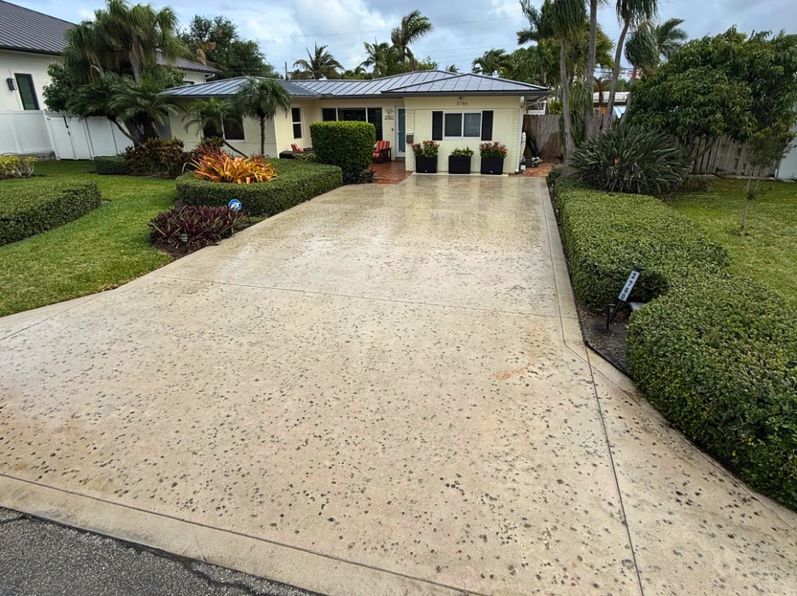
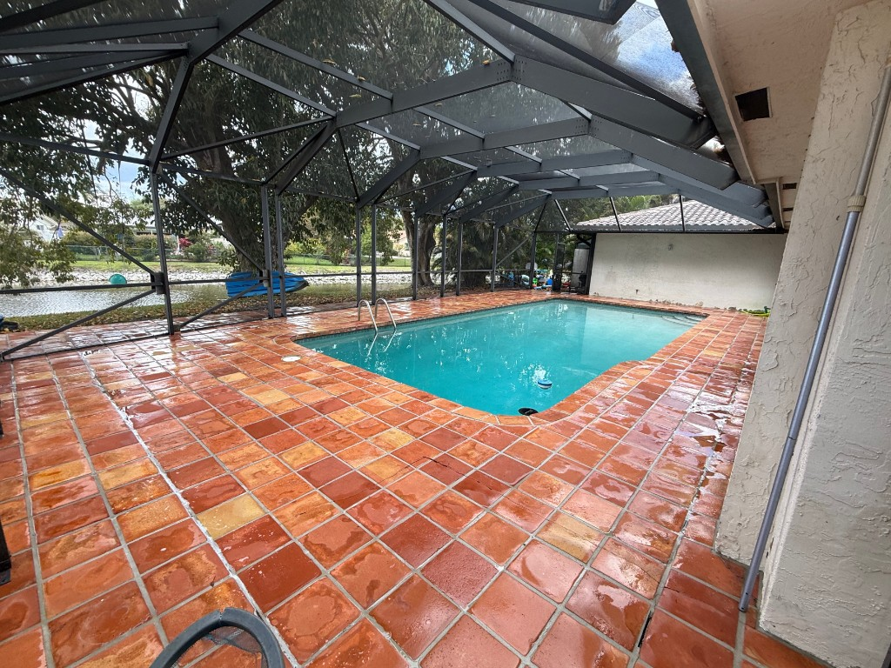

Soft Washing
Roofs, stucco, siding, and painted surfaces that high pressure can damage.

South Florida heat, rain, and organic growth leave driveways, pavers, pool decks, and sidewalks looking older than they are. PPW restores those surfaces with the right pressure, detergent, and rinse for the material—not a one-setting blast.




Pressure washing is for durable exteriors: concrete, pavers, stone, tile decks, and commercial hardscapes. Delicate walls, roofs, and painted siding are handled with soft washing instead.
Get Pressure Washing PricingOil, rust, tire marks, mildew, and gray weathering on residential and commercial concrete. We match pressure and detergent to the slab so the finish comes back bright without etching the surface.
Herringbone, brick, travertine, and terracotta decks collect algae in the joints and a film across the face. Cleaning restores color and grip underfoot—especially around pools, spas, and screened enclosures.
Front paths, HOA sidewalks, storefront walks, and curb lines that guests actually use. These are high-visibility areas and often the first thing that makes a property look neglected.
Natural stone walkways and waterfront patios stain quickly in coastal humidity. We clean grout lines and stone faces carefully so the material looks maintained, not stripped.
Parking pads, dumpster enclosures, loading zones, restaurant patios, and property-management common areas. Scoped for access, hours, and the amount of soil typical of high-use sites.
South Florida growth comes back. Monthly, quarterly, or seasonal washing keeps surfaces from reaching the “before” condition again and pairs well with a PPW Care Plan.
Quotes spell out which surfaces are in scope. Typical visits include:
Too much pressure on pavers or decorative concrete can scar the surface. Too little on a stained driveway leaves the job unfinished. We set the job around the property, not a default PSI.
Identify materials, stains, access, irrigation, and nearby landscaping.
List exactly which areas are included so the quote is easy to compare.
Move what we can, protect plants, and plan rinse paths.
Treat, wash, and rinse with equipment suited to that surface.
Walk the completed areas with you when you are on site.
We can scope driveways, decks, and walkways into one visit.